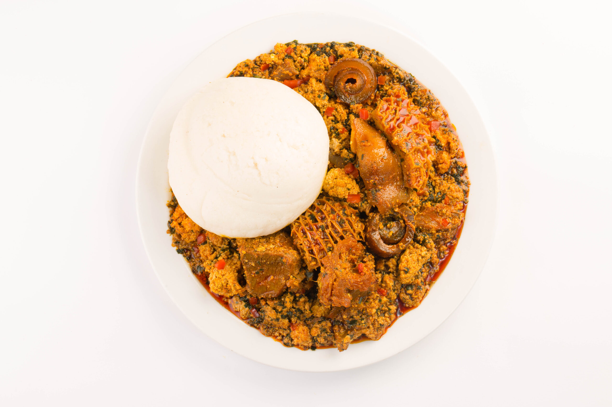

Semo and Egusi Soup
Home

Description
Ingredients
- Blended Egusi (Melon)
- Semolina or Semovita
- Ugu leaves
- Stock fish
- Smoked fish
- Crayfish
- Salt to taste.
- Meat
- Pomo
- Chicken laps
- Palm Oil
- 2-3 Scotch bonnet peppers rodo
- Seasonings
- Tomatoes
- Onions
Steps
- Wash the meat, chicken laps and place inside a clean pot,
add sliced onions, seasoning and salt then add a little amount
of water.
- Place it on the cooker and allow to cook for 10 minutes till
the chicken meat become pre-soft.
- Now in another clean pot, pour the Palm Oil and preheat
for 2 minutes.
- While preheating quickly take a small bowl add the Blended Egusi
(Melon), dilute with a little amount of water and mix together.
- Add the mixed Egusi to the hot Palm oil and fry for a minute.
- Now blend the tomatoes, onions and red Pepper together and
cook for some minutes.
- Add the boiled chicken, wash and rinse the Pomo, Stock fish,
Smoked fish and Crayfish and stir, then cover the pot and
cook for 2 minutes.
- Now add sliced the Ugu leaves, wash and rinse it then
add it to the sauce then cover and allow it to cook.
- Proceed to make the Demo swallow, Inside another clean pot pour
your preferred amount of water and allow to boil for some minutes,
now pour in the Demo powder and keep stiring till the Semo is
strong, then go take a look at the Egusi soup and turn off the
heat.
- The Semo and Egusi soup is ready, dish it out and serve.